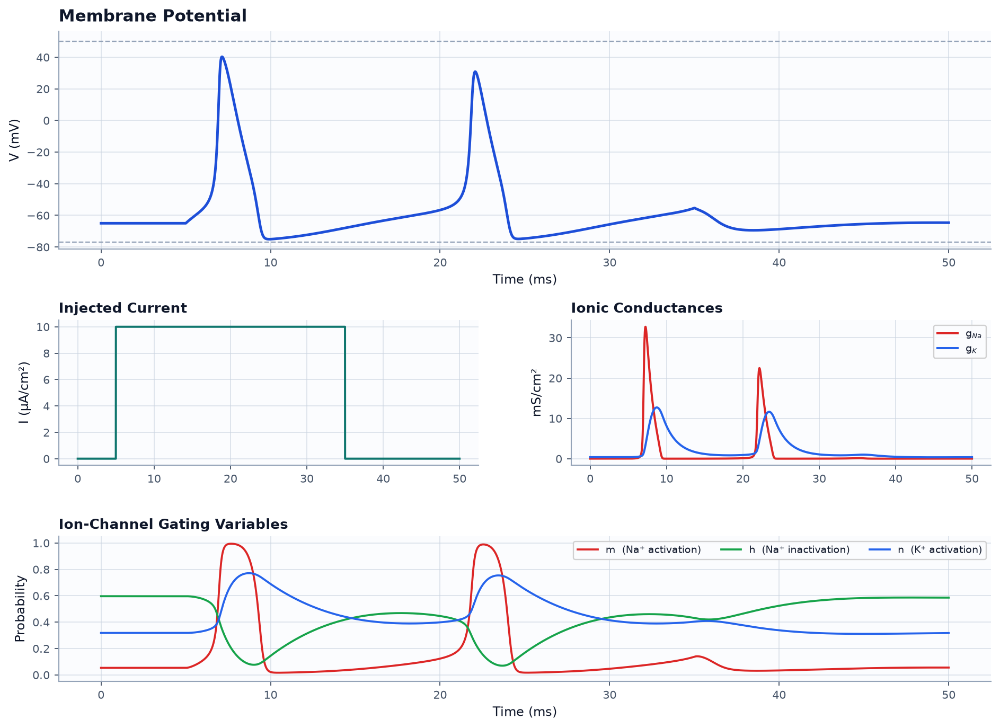
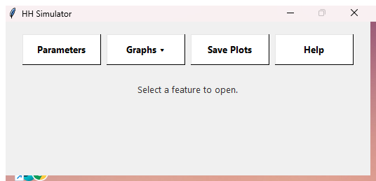

Action potentials in real time
Drive the membrane with step currents or multi-pulse protocols and watch spikes, refractory periods, and firing rates emerge.
An interactive desktop app for exploring single-compartment Hodgkin-Huxley membrane dynamics. Inject current, watch action potentials emerge in real time, and dissect the ionic conductances and gating variables behind every spike.

Built on a fourth-order Runge-Kutta integration of the classic 1952 Hodgkin-Huxley equations — the same model that earned the Nobel Prize for explaining how neurons fire.
Drive the membrane with step currents or multi-pulse protocols and watch spikes, refractory periods, and firing rates emerge.
Track sodium and potassium conductances as they open and close, alongside the net ionic current shaping each spike.
Visualize the m, h, and n gating probabilities — the hidden state machine that controls when channels conduct.
Adjust conductances, reversal potentials, capacitance, and stimulus timing — then export the full time series to CSV.
The app opens to a clean control hub. Open the parameters panel to shape a stimulus, then pop out any of the five graph windows — voltage, injected current, net ionic current, conductances, and gating states — each with pan, zoom, and point-tracing tools.

No Python, no terminal, no setup. Download the installer, run it, and the simulator installs like any Windows program — with a Start Menu shortcut and a clean uninstaller.
Download the Windows InstallerWindows may show a SmartScreen prompt because the installer isn't code-signed. Click More info → Run anyway to continue.